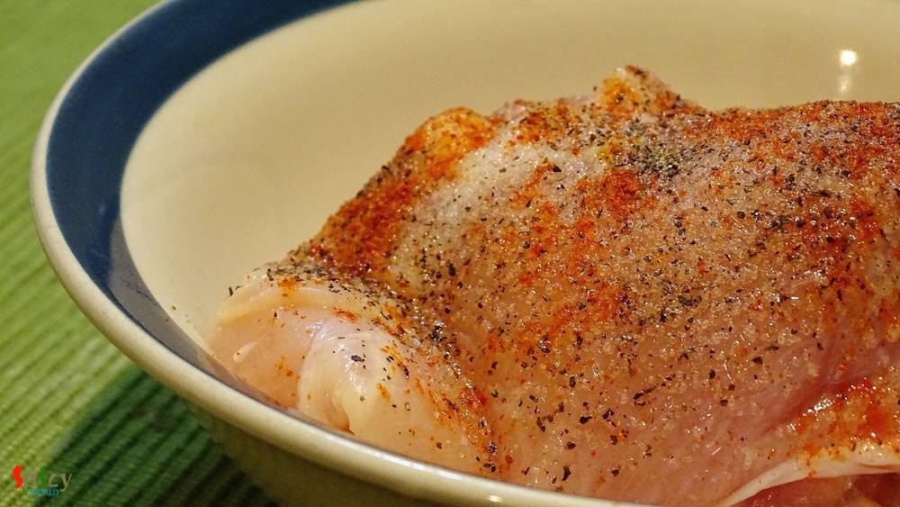
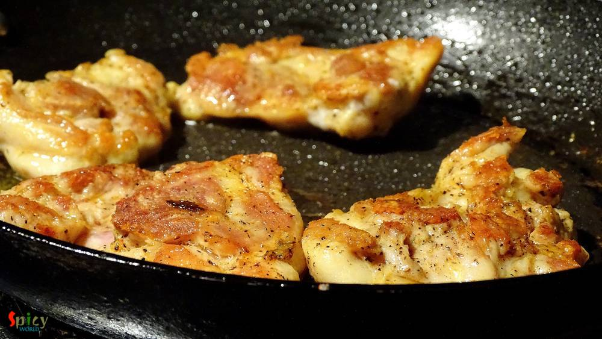
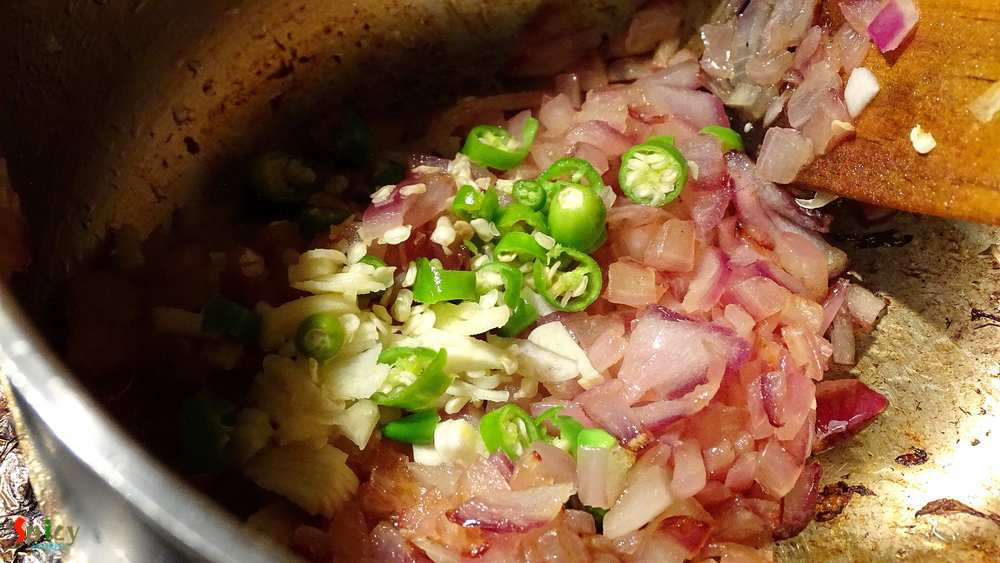
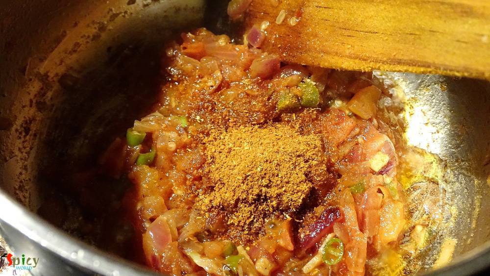
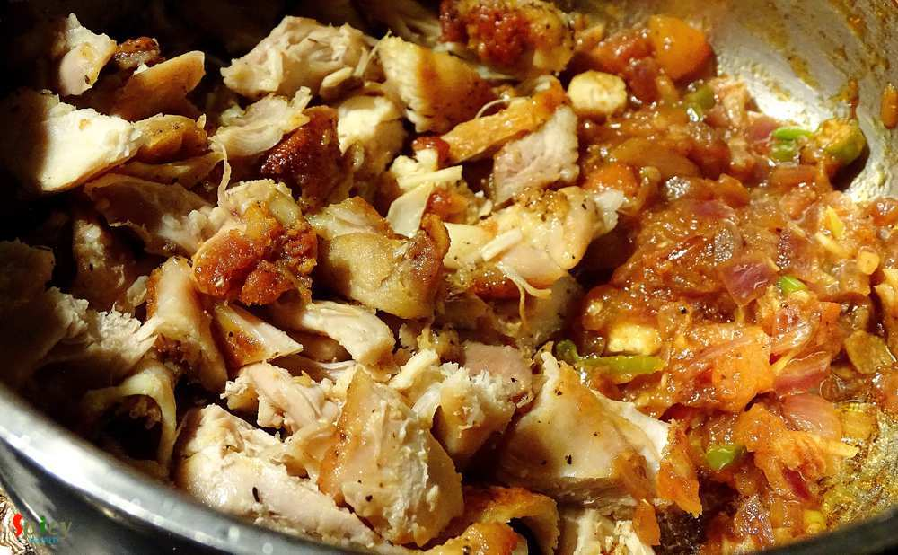
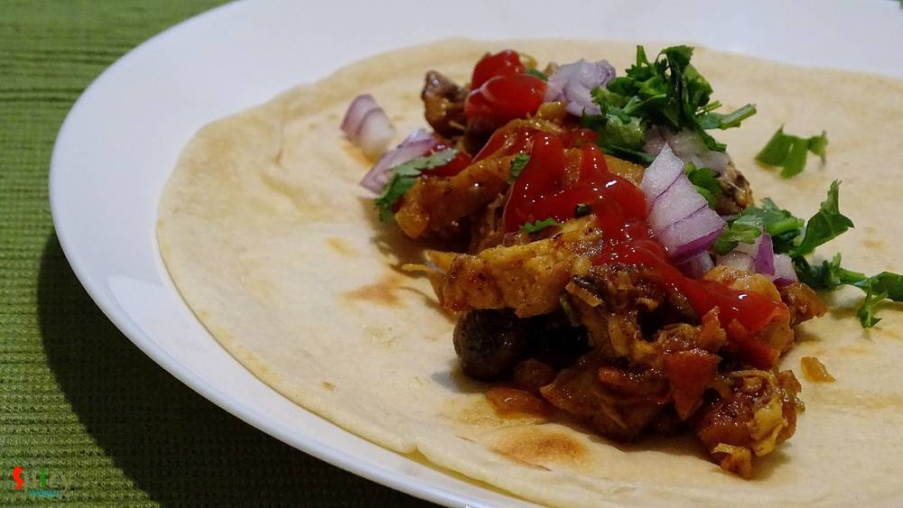

Simple and Easy Recipes
Tandoori Chicken Wraps
© 2016 Spicy World, Published on: Dec 17, 2015
Last week, from Monday to Friday, I was very lazy and didn't do much innovative cooking. We really got bored of eating usual meals. So, I thought to do something simple but new in the weekend. I had some boneless chicken and homemade tortillas in my kitchen. Suddenly planned to make some wraps. But then I was wondering about the flavour of the filling. 'He' suggested to give 'tandoori' flavour and I did it. You will not believe that those were the best wraps I have ever made. They were really scrumptious and will make them soon again. Try this in your kitchen and you will love them too.

Ingredients
- 4 medium sized tortillas.
- 4 chicken breast pieces.
- 1 cup of finely chopped onion.
- 1 Teaspoon chopped garlic.
- 3 green chilies, finely chopped.
- 4 Tablespoons of finely chopped tomato.
- Some chopped cilantro/coriander leaves.
- 3 Teaspoons of tandoori chicken masala.
- 4 Teaspoons tomato ketchup.
- Few drops of lemon juice.
- 1 Teaspoon Salt + 1 Teaspoon black pepper powder + 1 Teaspoon red chilli powder.
- 5 Tablespoons of white oil.

Steps
Marinate the chicken pieces with salt, black pepper and red chilli powder. Adjust the heat according to your taste. Keep it in the fridge for 1 hour.
Heat 2 Tablespoons of oil in pan.
Place the marinated chicken pieces and cook them from both sides for 15-20 minutes.
Then remove them from the pan and let the chicken cool down a bit.
After that chop them into bite size pieces.
Heat the remaining oil in a pan.
Add chopped onion (keep 4 Teaspoons aside), garlic and green chilies. Cook it for 5-6 minutes or until the raw flavour of everything in gone.
Then add chopped tomato and pinch of salt. Cook this for 3-4 minutes.
You can also add some chopped vegetables of you choice.
Add tandoori chicken masala. Mix it very well.
Then add the chopped chicken pieces. Mix this with the masala very well.
Check the seasoning and turn off the heat.
Now its time to assemble some wraps!!
First warm up the tortilla little bit in a pan.
Then put some filling, 1 Teaspoon chopped onion, some chopped cilantro, a Teaspoon ketchup and few drops of lemon juice.
After that you can wrap it in a paper or you can fold the edges and seal the wrap with a toothpick.
Your tandoori chicken wraps are ready ...
Serve them warm with chilled cokes.
")